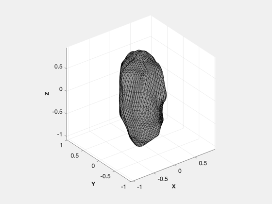
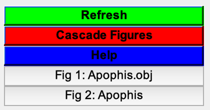

Increase resolution of Apophis
It breaks each triangle into 3 more triangles with a randomly moved center point. Loads Apophis.obj and saves ApophisImageN.png.
See also LoadCAD, Fractal, PrintToImage
%-------------------------------------------------------------------------- % Copyright (c) 2021 Princeton Satellite Systems, Inc. % All rights reserved. %-------------------------------------------------------------------------- % Since version 2021.1 %-------------------------------------------------------------------------- LoadCAD('Apophis.obj') g = LoadCAD('Apophis.obj'); [v, f] = Fractal( g.component.v, g.component.f, 1, 0 ); fA = NewFig('Apophis'); c = [0.4 0.4 0.4]; h = patch('vertices',v,'faces',f,'facecolor',c,'edgecolor',c); h.FaceLighting = 'gouraud'; h.EdgeLighting = 'gouraud'; light('position',1e6*[1 0 0]) h.AmbientStrength = 0; h.DiffuseStrength = 1; h.SpecularStrength = 0; h.SpecularExponent = 100; h.BackFaceLighting = 'unlit'; camtarget([0 0 0]); axis off camva(3); angle = [0 0.004 0.008]; for k = 1:3 x = cos(angle(k)); y = sin(angle(k)); campos([x y 0]); PrintToImage( fA, sprintf('ApophisImage%d',k), 1 ) end Figui %--------------------------------------
ans =
struct with fields:
name: 'Apophis.obj'
component: [1×1 struct]
radius: 1.0728
 